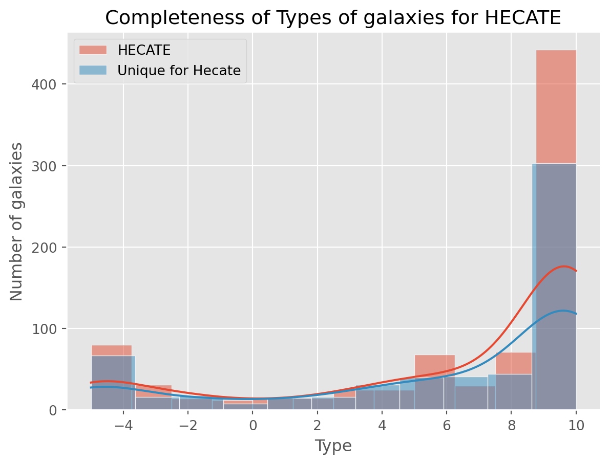
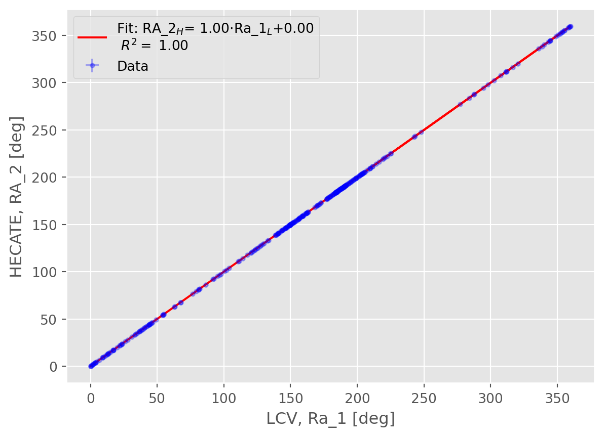
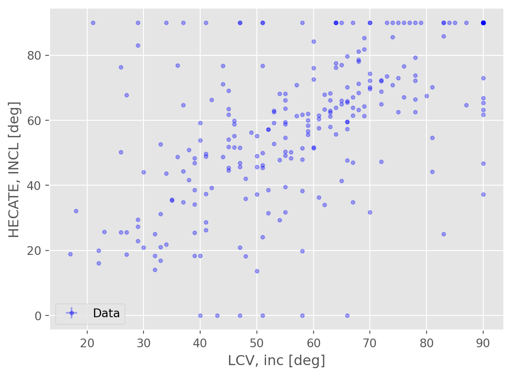
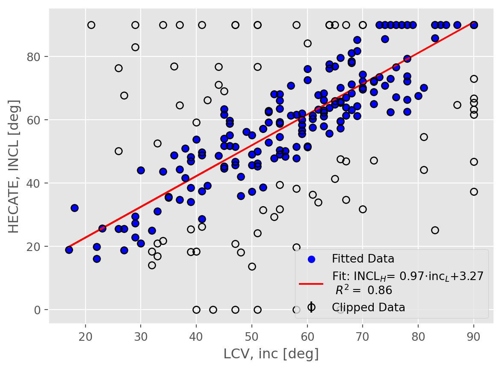
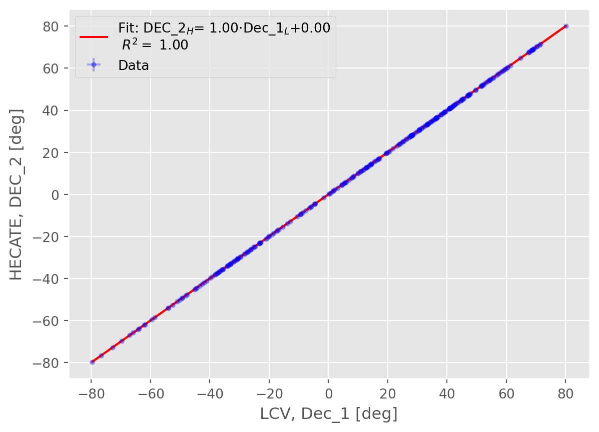
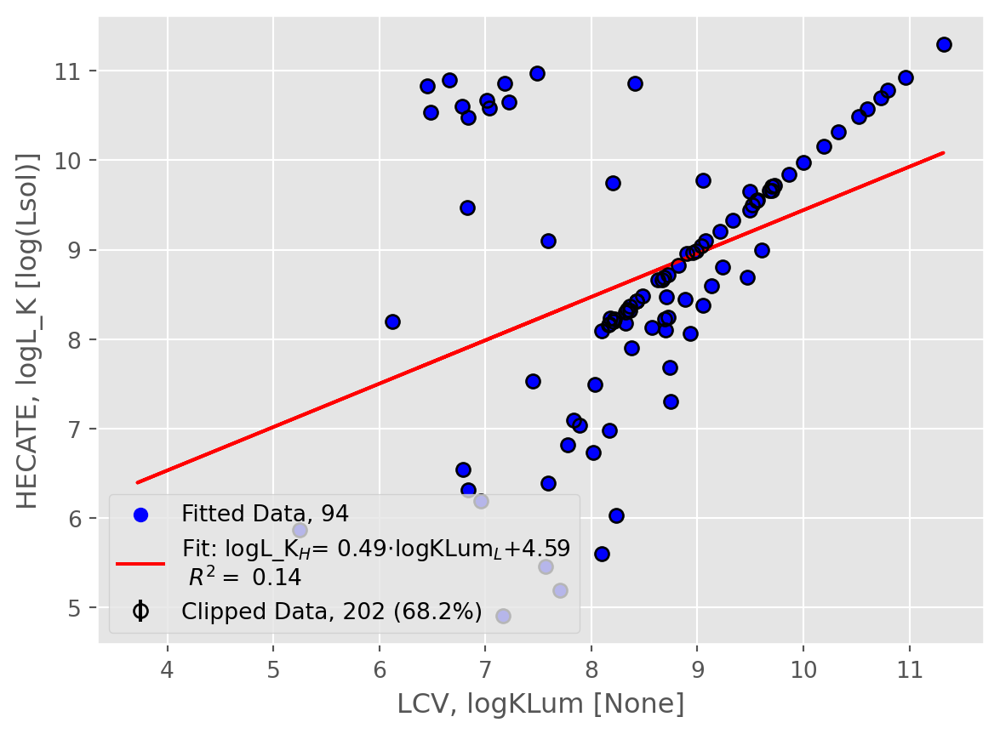
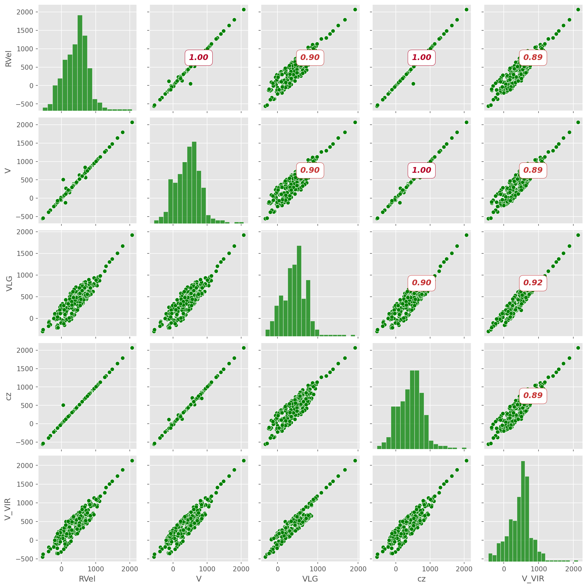

def compare_data(x, y, unc=None):
"""
Performs a linear comparison between two datasets.
This function fits a linear model to the data, calculates the slope and intercept of the fitted line,
and computes the R-squared value and Pearson correlation coefficient to assess the fit quality.
Parameters:
- x (array-like): The independent variable data.
- y (array-like): The dependent variable data.
- unc (array-like with units, optional): The uncertainties associated with the independent variable data. Default is None.
Returns:
tuple: A tuple containing the following elements:
- slope (float): The slope of the fitted linear model.
- intercept (float): The intercept of the fitted linear model.
- r2 (float): The R-squared value, indicating the proportion of variance explained by the linear model.
- corr (float): The Pearson correlation coefficient, measuring the linear correlation between x and y.
"""
try:
x_data = np.ma.array(x.value, mask=np.isnan(x.value))
y_data = np.ma.array(y.value, mask=np.isnan(y.value))
if unc is None:
w = None
else:
unc = np.ma.array(unc.value, mask=np.isnan(x.value))
w = 1 / unc
# initialize a linear fitter
fit = fitting.LinearLSQFitter()
# initialize a linear model
line_init = models.Linear1D()
# fit the data with the fitter
fitted_line = fit(line_init, x_data, y_data, weights=w)
slope = fitted_line[0].slope.value
intercept = fitted_line.intercept.value
# Predict values using the fitted model
y_pred = fitted_line(x_data)
# Remove NaN values
mask = ~np.isnan(y_data) & ~np.isnan(y_pred)
y_data_clean = y_data[mask]
y_pred_clean = y_pred[mask]
mask = ~np.isnan(x_data)
x_data_clean = x_data[mask]
# Calculate R-squared
r2 = r2_score(y_data_clean, y_pred_clean)
# Calculate Pearson correlation coefficient
corr = np.sqrt(np.abs(r2))
return slope, intercept, r2, corr
except Exception:
return 0, 0, 0, 0Comparison of Catalogs
The data
In this script we will compare out 2 catalogs Kovlakas et al. (2021) and Karachentsev and Kaisina (2013)
- The data have been joined based on their position in the sky (Ra, Dec, Distance).
- We use TOPCAT to create two joins, an inner and an outer join
- We will use the inner join for 1-1 comparisons
- If we see that the data are similar we can use the outer join
The dataset we are going to use consists of 373 galaxies and 164
How are we going to compare the data?
Scatter plots and \(R^2\) calculation
- \(R^2\): Measures the proportion of variance explained by the linear model.
- Slope of the Fitted Line: Should be close to 1 for a 1-1 correlation.1
- Pearson Correlation \(\rho\): Measures the strength and direction of the linear relationship between two variables, ranging from -1 to 1. 2
- Scatter plots: Scatter plots are essential for visually assessing the relationship between two datasets, identifying correlations, trends, and outliers, and evaluating the fit of linear models.
def scatter_plot(x, y, xerr = None, yerr = None):
"""
Generates a scatter plot of two datasets with optional error bars, fits a linear model to the data,
and displays the fitted line on the plot.
Parameters:
- x (array-like with units): Independent variable data.
- y (array-like with units): Dependent variable data.
- xerr (array-like, optional): Error in the independent variable data. Default is 0.
- yerr (array-like, optional): Error in the dependent variable data. Default is 0.
Returns:
None. The function displays a scatter plot with a fitted linear model.
"""
# Convert data to masked arrays, masking NaN values
x_data = np.ma.array(x.value, mask=np.isnan(x.value))
y_data = np.ma.array(y.value, mask=np.isnan(y.value))
# Handle default values for xerr and yerr
if xerr is None:
xerr_d = 0
else:
xerr_d = np.ma.array(xerr.value, mask=np.isnan(xerr))
if yerr is None:
yerr_d = 0
else:
yerr_d = np.ma.array(yerr.value, mask=np.isnan(yerr))
# Perform linear comparison between the datasets
if yerr is not None:
unc = yerr
elif yerr is None and xerr is not None:
unc = xerr
else:
unc = None
c, m, r2, corr = compare_data(x, y, unc)
# Plot the data with error bars
# errorbar -> needs np.ma -> no units
plt.errorbar(x_data, y_data, xerr = xerr_d, yerr = yerr_d, alpha = 0.3, c = "blue", label = "Data", fmt=".")
# Plot the fitted line with unit support
if c!=0:
plt.plot(x, c*x.value+ m, c = "red", label = f"Fit: {y.info.name}$_H $= {c:.2f}$\cdot${x.info.name}$_L${m:+.2f}\n $R^2=$ {r2:.2f}")
# Set plot labels
plt.xlabel(f"LCV, {x.info.name} [{x.unit}]")
plt.ylabel(f"HECATE, {y.info.name} [{y.unit}]")
# Display legend
plt.legend()
# Show the plot
plt.show()Histograms
Deviation
Comparable data
| LCV | HECATE | Description | Pearson Correlation [-1,1] |
|---|---|---|---|
| Ra_1 | RA_2 | Right Ascension | 0 |
| Dec_1 | DEC_2 | Declination | 0 |
| Dis | D | Distance | 0 |
scatter_plot(dt["Ra_1"], dt["RA_2"]), scatter_plot(dt["Dec_1"], dt["DEC_2"]), scatter_plot(dt["Dis"], dt["D"])


rvel_corr = round(compare_data(dt["RVel"],dt["V"])[3],3)
rvel_corr_v = round(compare_data(dt["RVel"],dt["V_VIR"])[3],3)
vlg_corr = round(compare_data(dt["VLG"],dt["V"])[3],3)
vlg_corr_v = round(compare_data(dt["VLG"],dt["V_VIR"])[3],3)
cz_corr = round(compare_data(dt["cz"],dt["V"])[3],3)
cz_corr_v = round(compare_data(dt["cz"],dt["V_VIR"])[3],3)| LCV | HECATE | Description | Linear Correlation |
|---|---|---|---|
| RVel | V/V_VIR (with errors) | Heliocentric radial velocity | (0, 0) |
| VLG | V/V_VIR (with errors) | Radial velocity | (0, 0) |
| cz (with errors) | V/V_VIR (with errors) | Heliocentric velocity | (0, 0) |
scatter_plot(dt["RVel"], dt["V"], yerr = dt["E_V"])
| LCV | HECATE | Description | Pearson Correlation [-1,1] |
|---|---|---|---|
| TType | T (with errors) | Numerical Hubble type following the de Vaucouleurs system | 0 |
| inc | INCL | Inclination (deg) | 0 |
| a26_1 (Major) | A26_1a (Semi-major axis) | angular diameter (arcmin) | 0 |
As we can see we don’t have any significant correlation between the Types of galaxies
scatter_plot(dt["TType"], dt["T"], yerr = dt["E_T"])
scatter_plot(dt["inc"], dt["INCL"], yerr = dt["E_V"])
scatter_plot(dt["a26_1"], dt["A26_1a"], yerr = dt["E_V"])

For the A26: In the LCV Catalog it is measured in deg, and in Hecate it is mesaured in kpc
| LCV | HECATE | Description | Pearson Correlation [-1,1] |
|---|---|---|---|
| logKLum | logL_K | 0 |
scatter_plot(dt["logKLum"], dt["logL_K"])
| LCV | HECATE | Description | Pearson Correlation [-1,1] |
|---|---|---|---|
| mag_B (with errors) | BT (with errors) | 0 | |
| Kmag | K | 2MASS band magnitude (both) | 0 |
scatter_plot(dt["mag_B"], dt["BT"], yerr = dt["E_BT"])
scatter_plot(dt["Kmag"], dt["K"], yerr = dt["E_K"])

| LCV | HECATE | Description | Pearson Correlation [-1,1] |
|---|---|---|---|
| AB | AG | Galactic extinction/absorption in B band | 0 |
| AB_int | AI | Internal/Intrisic B band extinction/absorption | 0 |
scatter_plot(dt["AB"], dt["AG"])#, scatter_plot(dt["AB_int"], dt["AI"])
| LCV | HECATE | Description |
|---|---|---|
| logSFR_TIR | Decimal logarithm of the total-infrared SFR estimate [Msol/yr] | |
| logSFR_FIR | Decimal logarithm of the far-infrared SFR estimate [Msol/yr] | |
| logSFR_60u | Decimal logarithm of the 60um SFR estimate [Msol/yr] | |
| logSFR_12u | Decimal logarithm of the 12um SFR estimate [Msol/yr] | |
| logSFR_22u | Decimal logarithm of the 22um SFR estimate [Msol/yr] | |
| logSFR_HEC | Decimal logarithm of the homogenised SFR estimate [Msol/yr] | |
| logSFR_GSW | Decimal logarithm of the SFR in GSWLC-2 [Msol/yr] | |
| SFRFUV | FUV derived integral star formation rate | |
| SFRHa | H{alpha} derived integral star formation rate |
| LCV | HECATE | Description |
|---|---|---|
| logM26 | Log mass within Holmberg radius | |
| logMHI | Log mass within Holmberg radius | |
| logM_HEC | Decimal logarithm of the stellar mass [Msol] | |
| logM_GSW | Decimal logarithm of the stellar mass in GSWLC-2 [Msol] | |
| logStellarMass | Stellar Mass from M*/L=0.6 |
References
Karachentsev, Igor D., and Elena I. Kaisina. 2013. “STAR FORMATION PROPERTIES IN THE LOCAL VOLUME GALAXIES VIA Hα AND FAR-ULTRAVIOLET FLUXES.” AJ 146 (3): 46. https://doi.org/10.1088/0004-6256/146/3/46.
Karachentsev, Igor D., Dmitry I. Makarov, and Elena I. Kaisina. 2013. “UPDATED NEARBY GALAXY CATALOG.” AJ 145 (4): 101. https://doi.org/10.1088/0004-6256/145/4/101.
Kovlakas, K., A. Zezas, J. J. Andrews, A. Basu-Zych, T. Fragos, A. Hornschemeier, K. Kouroumpatzakis, B. Lehmer, and A. Ptak. 2021. “The Heraklion Extragalactic Catalogue (HECATE): A Value-Added Galaxy Catalogue for Multimessenger Astrophysics.” Monthly Notices of the Royal Astronomical Society 506 (September): 1896–1915. https://doi.org/10.1093/mnras/stab1799.